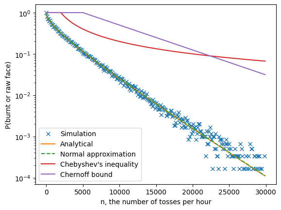
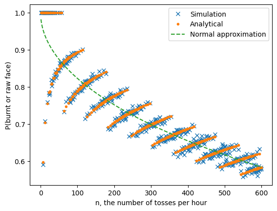
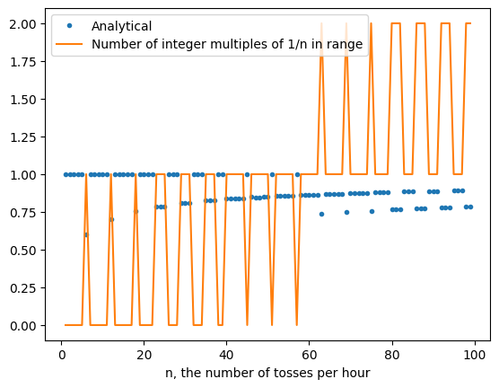

How much should you stir your tofu?
Can stirring more ever lead to worse outcomes?
Tuesday, June 6, 2023 · 6 min read
Suppose you are cooking tofu, cut into tasty 1-inch cubes. On your stove it takes each cube-face 10 minutes to cook. You could cook each of the 6 faces of each cube in one hour (60 minutes) by rotating the cube to an uncooked face every 10 minutes–but this is clearly tedious and suboptimal.
A better idea is stirring: instead of carefully rotating each cube to an uncooked face, you can vigorously stir your pan and reorient each cube uniformly at random (like rolling dice).
The question I want to consider today is, “how often should you stir your tofu cubes”? For example, you might choose to stir them every 10 minutes for an hour, for a total of 6 stirs including right at the beginning. In that case, you might get lucky and have every face exposed to heat once. However, because each stir is an independent random roll, the more likely scenario is that some face gets cooked twice or more (burnt!) and other faces don’t get any heat (raw!). Intuitively, it seems like we should stir more frequently to “even out” the heat. Let’s check this intuition.
Suppose we stir $n$ times over the course of the hour, and we are willing to tolerate being off by up to $\delta=5\%$ of optimal cookedness–that is, consider the tofu raw before 9 minutes and 30 seconds, and burnt after 10 minutes and 30 seconds. Let $f(n)$ be the proportion of burnt or raw faces, in expectation. We want to see how $f(n)$ depends on $n$.
We can compute $f(n)$ many ways. Most obviously, we can simulate the tofu system with some large number of cubes and see what happens.
import numpy as np
from matplotlib import pyplot as plt
mean = 1/6
tol = 0.05
def experiment(n):
N = 1_000
rolls = np.random.multinomial(n, np.ones(6)/6, size=N)
toasts = rolls / n
burns = ((np.abs(toasts - mean) >= tol * mean) * 1.0).mean()
return burns
It is also not hard to work this out analytically. First, by linearity of expectation we can just look at one face, which acts like a binomial random variable: for each of the $n$ stirs, there is a $1/6$ probability of getting heat. We can subtract the CDFs at the tolerance limits $\mu\cdot(1\pm\delta)$ to compute the proportion of times the face is well-cooked, and then subtract from 1 to get the proportion of bad faces.
import scipy.stats
def analytical(n):
return 1 - (
scipy.stats.binom.cdf( (1 + tol) * (n / 6), n, 1/6 ) -
scipy.stats.binom.cdf( (1 - tol) * (n / 6), n, 1/6 )
)
We can also use statistics tricks to approximate the answer in useful closed forms. For example, we can take a normal approximation to the binomial as $n \rightarrow \infty$. The mean is $\mu=1/6$, of course, and the variance is given by $\sigma^2 = p(1-p)/n = 5/36n$. We can then plug those parameters into the normal CDF, along with the tolerance limits as above.
def normal(n):
vari = 1/6 * (1 - 1/6) / n
z = (tol * mean) / np.sqrt(vari)
return 1 - (scipy.stats.norm.cdf(z) - scipy.stats.norm.cdf(-z))
Finally, we can apply Chebyshev’s inequality or a Chernoff bound. These formulas only provide an upper bound on the proportion of bad faces, but they don’t depend on a normal approximation and are thus guaranteed to be true. I won’t work through the derivations here.
def chebyshev(n):
vari = 1/6 * (1 - 1/6) / n
z = (tol * mean) / np.sqrt(vari)
return np.minimum(1., 1 / z ** 2)
def chernoff(n):
return np.minimum(1., 2 * np.exp(-(tol ** 2) / 3 * (1/6) * n))
Plotting all of these metrics out to asymptotic $n \rightarrow \infty$ (see the graph below), we see several expected patterns:
- As $n$ increases, the proportion of burnt faces goes down with exponential falloff.
- The analytical solution closely tracks the simulation, at least until the variance of the simulation gets high enough to make it unreliable.
- The normal approximation is indistinguishable from the analytical solution.
- The bounds are quite loose. Chebyshev “wins” for a little while, but ultimately Chernoff’s exponentiality kicks in and dominates.
So far, so good: it seems like you can get quite well-cooked tofu with only a logarithmic amount of stirring effort!
ns = np.arange(1, 30000, 100)
plt.plot(ns, [experiment(int(n)) for n in ns], 'x', label='Simulation')
plt.plot(ns, [analytical(int(n)) for n in ns], '-', label='Analytical')
plt.plot(ns, [normal(int(n)) for n in ns], '--', label='Normal approximation')
plt.plot(ns, [chebyshev(int(n)) for n in ns], '-', label='Chebyshev\'s inequality')
plt.plot(ns, [chernoff(int(n)) for n in ns], '-', label='Chernoff bound')
plt.yscale('log')
plt.ylabel('P(burnt or raw face)')
plt.xlabel('n, the number of tosses per hour')
plt.legend()
<matplotlib.legend.Legend at 0x7fbf0b32ae60>

But asymptotic $n$ is unreasonable in this setting: for example, 6000 flips per hour (6 kfph) is more than one flip per second. Let’s zoom in on small $n$ to see what is happening at the scale of the real world. In this plot, I’m hiding the two bounds (which are all maxed out at 1) and only showing up to $n=600$, which is a stir every 6 seconds.
ns = np.arange(1, 600)
plt.plot(ns, [experiment(int(n)) for n in ns], 'x', label='Simulation')
plt.plot(ns, [analytical(int(n)) for n in ns], '.', label='Analytical')
plt.plot(ns, [normal(int(n)) for n in ns], '--', label='Normal approximation')
plt.ylabel('P(burnt or raw face)')
plt.xlabel('n, the number of tosses per hour')
plt.legend()
<matplotlib.legend.Legend at 0x7fbf09037460>

A curious pattern emerges! Here is what I notice:
- The analytical solution (orange dots) continues to track the simulation (blue crosses).
- However, they both diverge from the normal approximation (which is perhaps as we expect at low $n$).
- This divergence is systematic. The analytical probabilities form an interesting “banded” structure.
- Most surprisingly, sometimes increasing $n$ increases the number of bad faces!
- To do better than $n=6$, you have to go all the way out to $n\approx 500$.
The puzzle is, Why does more stirring cause worse cooking?
Let’s consider the cases $n=6$ and $n=12$. For $n=6$, we already reasoned that a face is well-cooked if it is exposed to heat for only one of the 6 turns. This has probability $\binom{6}{1}(1/6)^1(6/5)^4 \approx 0.402$, and indeed the graph above shows that analytically, we expect a $0.6$ probability of a face getting burnt or being raw at $n=6$.
Now consider $n=12$. Now, a face is definitely well-cooked if it gets 2 turns on the heat, because $2/12 = 1/6 = \mu$. But what about 1 turn or 3 turns? In each case, it is off by a factor of $(1/12)/(1/6) = 0.5 \geq \delta$, so the face would either be raw or get burnt. Hence, the probability of a well-cooked face is given by $\binom{12}{2}(1/6)^2(5/6)^{10} \approx 0.296$, which yields a probability of $0.704$ that the face is raw or burnt. Higher than $0.6$ at $n=6$!
Another way to see what’s going on is to consider 2-faced pancakes instead of 6-faced tofu cubes. If you cook a pancake with $n=2$ random flips, you have a good chance that you will cook both sides (one on each flip), though of course there is some chance you burn one side by cooking it twice, and leave one side uncooked. But if you cook a pancake with $n=3$ flips, you will necessarily always burn one side and leave the other side uncooked, because at best you will get a 1/3-2/3 ratio of cooking time.
Returning to cubes now, let’s see what happens more generally. Say a face gets $X$ turns on the heat where $X \sim \text{Binom}(n, 1/6)$. The probability of being well-cooked is $\Pr[|X/n-\mu| \leq (1+\delta)\mu]$ where $\mu=1/6$. Breaking this up, we can sum over possible outcomes of $X$, to have $\sum_{(1-\delta)(1/6) \leq x/n \leq (1+\delta)(1/6)} \Pr[X=x]$. In other words, we are summing over integer multiples of $1/n$ in the range $[(1-\delta)(1/6), (1+\delta)(1/6))]$. How many integer multiples are there in that range? This is easily given by $\lceil (1/6)(1+\delta)/(1/n) \rceil - \lfloor (1/6)(1-\delta)/(1/n) \rfloor - 1$. We can plot this against the analytical probability to get some insight.
ns = np.arange(1, 100)
plt.plot(ns, [analytical(int(n)) for n in ns], '.', label='Analytical')
plt.plot(
ns,
(np.ceil(ns * 1/6 * (1 + tol)) -
np.floor(ns * 1/6 * (1 - tol)) - 1),
label='Number of integer multiples of 1/n in range'
)
plt.xlabel('n, the number of tosses per hour')
plt.legend()
<matplotlib.legend.Legend at 0x7fc0105f1150>

The spikes in the number-of-integers graph correspond directly to the jumps between bands. This suggests the following explanation of what’s going on: that there are two “forces” at play.
- The number of integer multiples of $1/n$ that could be matched within the range allowed by the tolerance, which jumps around in a quantized manner according to number theory.
- The sum of probabilities of matching each of those integer multiples, which decreases as we add more flips, because there are more possible other-outcomes.
When the first “force” spikes, it causes the probability of a bad face to drop suddenly because there are more ways to cook a good face. However, the second “force” causes the probability of a bad face to rise gradually because each way to make a good face becomes less likely. This explains the banding structure in the graph above.
To summarize, in the limit, continuous stirring indeed helps cook your tofu more evenly. However, if you are stirring only occasionally, then sometimes more stirring can actually harm your tofu!